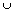
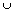

V
V (p). Then d(x, p) < and if we take - d(x, p) =
(p). Then d(x, p) < and if we take - d(x, p) =  a -neighbourhood of x is in V(p).
a -neighbourhood of x is in V(p).If A
 X is open then A =  V(a)(a) where the union is over all a A and (a) is chosen so that V(a)(a) is inside A. It is easy to verify the double inclusion to prove equality.
X is open then A =  V(a)(a) where the union is over all a A and (a) is chosen so that V(a)(a) is inside A. It is easy to verify the double inclusion to prove equality.
Not every open set can be written as a union of countably many
-neighbourhoods. For example, take R with the discrete topology. Then any -neighbourhood is either R or a singleton set and so no proper uncountable set can be written as a countable union of these.However, R with its usual metric does have this property.